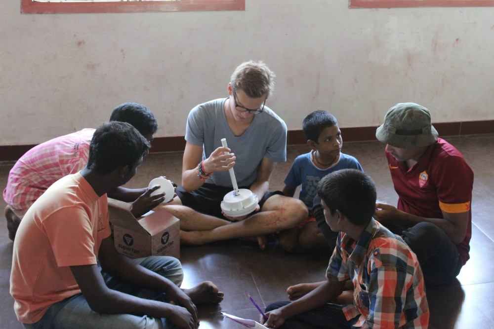

(texte en anglais) Mission Mission To elevate the weaker section of the society such as Mentally Challenged, Physically Challenged, Orphan and poor children and youth as well. To provide basic amenities such as food, clothing, shelter, education
and health care etc. to the weaker section of the society. To provide educational opportunity to orphan children. To create an environment through which children will be equipped as a self sustainable contributing individual. To create
Awareness in the community about the root causes of disability. To change the negative attitudes towards people with disabilities. To generate employment opportunities for the disabled. To match the capabilities of the disabled to the
needs of employers. To promote training and education. To Support research in multi-dimensional rehabilitation. To conduct various necessary rehabilitation programs both for mentally challenged and physically challenged children. To Conduct
various research in disabilities To create awareness on HIV / AIDS and STD To meet the needs of the poor people and other community welfare services.
Mon engagement
Ayant des origines éloignée Indienne, mon envie de découvir ce pays fut fort depuis tout jeune. Après avoir vécu un accident le 2 Janvier 2015, une remise en question sur ma vie m'a conduit à faire le choix d'en donnait un sens positif. C'est
tout naturellement donc que je suis partis avec mes propres économies à l'aventure après 2semaines de réflexion. Me retrouvant en Inde, accompagné d'un ami qui lui partais uniquement en vacance, je me suis retrouvé après son départ seul
dans ce grand pays sans y connaître personne, durant mes 2 premières semaines je tombe sur Stephen directeur de Baby Sarah's Home l'orphelinat d'Arryankuppam petit village près de Pondicherry. Ma démarche envers lui fut sincère, je n'attendais
rien en retour, juste proposer mes services et mon aide pour participer à la vie de l'orphelinat. Cours de speech thérapy, activité sportive, sortie ou encore atelier musique, j'y ai passé 4mois formidable, voilà pourquoi je me devais
dans ce portfolio consacré quelques lignes pour eux, ils font partis de mon histoire.

Les enfants, bénévole allemand (Lukas) et moi même.